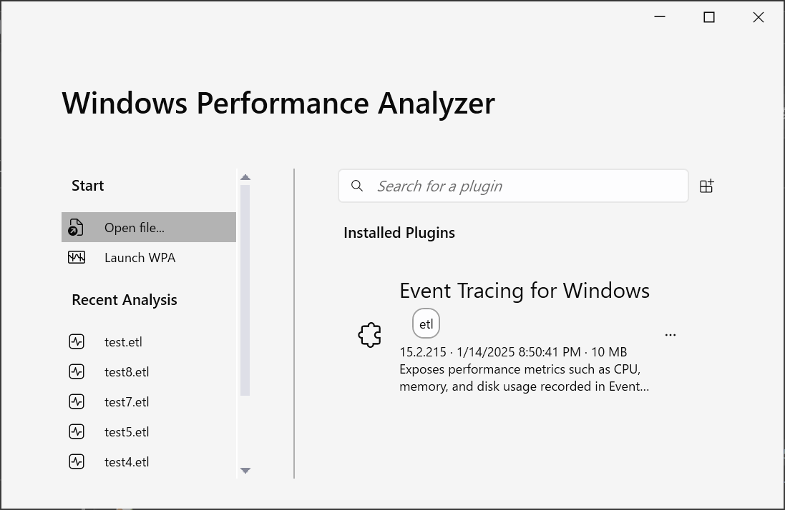

こんにちは、Japan Developer Support Core チームの松井です。今回は、Win32 アプリケーションのヒープ メモリ リークの調査方法について解説します。
以前の記事では User-Mode Dump Heap (UMDH) ツールを使用した調査方法を解説しました。UMDH はヒープのメモリ リークの調査で古くから利用されている軽量で非常に便利なツールですが、スナップショット ベースの分析となるため、時系列の変化を追うことが難しい場合があります。また、テキスト ベースのツールであるため、情報の視覚化や詳細な分析のための機能は限られています。
今回は、無償で利用できる Windows Performance Recorder (WPR) と Windows Performance Analyzer (WPA) を使用してヒープ メモリ リークを分析する方法を紹介します。WPR と WPA を使用すると、システムやアプリケーションのパフォーマンスに関する様々なシステムのトレース情報を収集し、グラフ機能とデータテーブルを組み合わせた詳細な分析が可能になります。これらは CPU 使用率やディスク I/O、ネットワーク アクティビティなど様々な観点からパフォーマンスの問題を調査できる高度な診断ツールですが、今回は特にヒープ メモリ リークの調査に焦点を当てて解説します。
はじめに
メモリ リークは、アプリケーションが不要になったメモリを解放せず、使用し続けることによって発生します。 これにより、アプリケーションのメモリ使用量が増加し、最終的にはアプリケーションのクラッシュやシステム全体のパフォーマンスの低下といった問題が発生する可能性があります。
メモリ リークを疑う場合、まずはパフォーマンス モニターなどでアプリケーションのプロセスの Private Bytes を監視し、右肩上がりの傾向が見られるか確認します。上昇している期間があっても右肩上がりではなく一定の範囲で変動している場合は、アプリケーションが正常にメモリを管理している可能性が高いと考えられます。また、キャッシュの使用やガベージ コレクションのタイミングによって一時的にメモリ使用量が増加することもありますので、アプリケーションの動作特性を理解することも重要です。
また、リークしているメモリの種類を特定することも重要です。例えば malloc 関数や new 演算子で確保されたヒープ メモリのリークと、VirtualAlloc 関数で確保された仮想メモリのリークでは、情報採取方法や調査方法が異なります。今回は、malloc 関数や new 演算子で確保されたヒープ メモリのリークを対象とします。今回使用するサンプル プログラムは以下の C++ のとおりで、x64 のデバッグ ビルドでコンパイルして使用します。
1 | // NativeHeapLeak.cpp |
WPR による情報採取
Windows 10 / Windows Server 2016 以降には既定で WPR (C:\windows\system32\wpr.exe) がインストールされていますので、ツールのインストールは不要です。情報採取手順は以下のとおりです。
管理者としてコマンド プロンプトを起動します。
以下のコマンドを実行してヒープ トレースを有効にします。
1
wpr.exe -HeapTracingConfig <process_name> enable
<process_name>は調査対象のプロセス名に置き換えてください。例えばNativeHeapLeak.exeなどです。ヒープ トレースの設定を反映させるために、調査対象のアプリケーション プロセスを再起動します。
以下のコマンドを実行してトレースの記録を開始します。
1
wpr.exe -start HeapTracing -filemode -recordtempto <temporary_directory>
<temporary_directory>は一時ファイルを保存するディレクトリに置き換えてください。例えばC:\logsなどです。一時ファイルはトレースの記録をキャンセルまたは停止した場合に自動的に削除されます。アプリケーションを操作して、メモリ リークが発生する状況を再現します。メモリ使用量の増加量が少ない場合は正常な動作と異常な動作の区別が難しくなるため、メモリ リークが顕著に現れるまで操作を続けます。
トレースの記録を停止して、ETL ファイルを保存します。以下のコマンドを実行します。
1
wpr.exe -stop <output_file>
<output_file>は保存する ETL ファイル名に置き換えてください。例えばC:\logs\heap_trace.etlなどです。ヒープ トレースを無効にします。以下のコマンドを実行します。
1
wpr.exe -HeapTracingConfig <process_name> disable
調査対象のアプリケーション プロセスを再起動します。
注意事項
-
トレースの記録を開始する時に
-filemodeオプションを指定した場合、記録を停止するまでの間トレースは一時ファイルに保存されます。指定しない場合は、循環ログとしてメモリに保存され古いデータが上書きされる可能性があります。-filemodeオプションを指定した場合は、-recordtemptoオプションで一時ファイルを保存するフォルダーを指定し、そのフォルダーに十分な空き容量があることを確認してください。 -
-filemodeオプションを指定した場合はドライブの空き容量が許す限りトレースを記録し続けますが、ファイルが大きすぎると WPA での分析が困難になる場合がありますので注意してください。 -
wpr.exe -statusコマンドを実行すると、現在のトレースの状態を確認できます。 -
wpr.exe -cancelコマンドを実行すると、現在のトレースを途中でキャンセルできます。 -
WPR による情報採取がシステムのパフォーマンスに与える影響や一時ファイル、ログ ファイルのサイズは、システム構成やアプリケーションの動作によって大きく異なります。本番環境で情報採取を実行する前に必ず検証環境で事前に確認してください。
WPA による分析
分析に使用する WPA は Windows には含まれていません。WPA は Windows Performance Toolkit (WPT) の一部として提供されており、WPT は Windows ADK のインストール時に選択してインストールできます。また、Microsoft Store からもインストールできます。特に事情が無ければ、自動更新に対応している Microsoft Store からのインストールをお勧めします。
WPA がインストールできたら、以下の手順で分析を行います。
1. ETL ファイルの読み込み
Windows Performance Analyzer を起動し、[Open file] メニューを選択して ETL ファイルを開きます。

2. [Heap Allocations] グラフの追加
ETL ファイルを開くと、[Graph Explorer] ペインに利用可能なグラフの一覧が表示されます。リストから [Heap Allocations] グラフをダブルクリックして [Analysis] タブに追加します。ここで [Heap Allocations] グラフが見つからない場合は、ヒープ トレースが記録されていなかったことを示しています。WPR の情報採取手順で正しいプロセス名に対してヒープ トレースが有効になっていること、およびヒープ トレースの有効化後にプロセスを再起動して反映させたか確認してください。
[Heap Allocations] グラフが追加されると、ヒープ メモリの割り当てと解放の状況が時間軸に沿って表示されます。メモリ リークが発生している場合、グラフ上で割り当てが解放を上回り、全体としてメモリ使用量が増加している様子が確認できます。
3. グラフ中の時間軸の選択
情報採取した期間やタイミングによっては、メモリ リークが発生していない期間がトレース ログに含まれている場合があります。また、メモリ リークが発生している期間が長い場合は、グラフ全体を表示しても傾向が分かりにくい場合があります。不要な情報は調査をする際のノイズとなる可能性があるためため、グラフ内で着目したい期間をドラッグし、右クリックしてコンテキスト メニューから [Zoom] を選択して、選択した期間にズームインします。今回は一定周期で繰り返しメモリの増減の山と谷があるため、そのうちの一つを選択しています。
選択範囲を戻したい場合は、コンテキスト メニューから [Undo Zoom] や [Unzoom] を選択してください。
なお、上部に表示されているグラフと下部に表示されているデータテーブルの選択は連動しています。グラフで範囲を選択すると、その期間に含まれるトレース ログに関する行だけがデータ テーブルで強調表示されます。反対にデータ テーブルで行を選択すると、その行に対応するトレース ログが含まれる期間がグラフで選択された状態になります。この機能は、問題が発生している期間やその時の処理の傾向を把握するために役立ちます。
4. 分析に使用する列の構成
ヒープ トレースでは、ヒープの割り当てや解放といったイベント毎に時刻やサイズ、スタック等の情報が記録されます。WPA では、これらの情報に基づいてグラフや集計を表示することができます。分析に使用する列の構成は、調査対象のアプリケーションや問題の特性によって異なりますが、ヒープのメモリ リークの調査に有用な列の一例を以下に示します。
- Process
- Impacting Type
- Stack
- Count
- Impacting Size (KB)
表の黄色いバーより左側の列は、トレース ログの集計時にグループ化するための列になります。上図では、プロセス、影響の種類、スタック毎にグループ化しています。これにより、プロセス毎に、スタックをドリルダウンしながらメモリ使用量に関連したモジュールや関数の情報を調べることができるようになります。ただし、ここまでの段階ではまだシンボルが読み込まれておらず、"Symbols disabled" と表示され関数名は確認できないため、シンボルの設定と読み込みを次のセクションで行います。
なお、表の黄色いバーより右側の列は、集計した結果を表示するための列になります。上図では、各グループ毎のイベントの回数 (Count) と影響を受けたサイズ (Impacting Size (KB)) を表示しています。影響を受けたサイズが正の値の場合はメモリの割り当て、負の値の場合はメモリの解放を示しています。メモリ リークの調査では、影響を受けたサイズが正の値で大きいグループに注目します。
5. シンボルの設定と読み込み
WPA でスタックの情報を表示するためには、シンボルの設定と読み込みが必要です。
まず、メニューから [Trace] - [Configure Symbol Paths] を選択して、シンボルのパスを設定します。既定では下図のように、Microsoft のパブリック シンボル サーバーが設定されています。必要に応じて、アプリケーションのシンボル ファイル (PDB ファイル) が保存されているフォルダーを追加してください。
次に、[Load Settings] タブを選択し、[Load symbols per the following restrictions] を有効にして調査対象のプロセス名を [Load symbols for the following processes:] のリストに追加します。これを指定しない場合、WPA はすべてのモジュールのシンボルを読み込もうとするため、シンボルの読み込みに非常に時間がかかる場合があります。
[Configure Symbols] ダイアログで [OK] をクリックして設定を保存し、WPA のメニューから [Trace] - [Load Symbols] を選択してシンボルの読み込みを開始します。シンボルの読み込みが完了すると、[Heap Allocations] グラフのスタック列に関数名が表示されるようになります。
シンボルの読み込みに関して問題がある場合は、[Symbols Hub] ペインに表示される診断情報を確認してください。モジュールの行を展開すると、シンボル読み込みを試行した URL やパスなどの詳細な情報が確認できます。
6. メモリ割り当ての原因となった関数の特定
まず、Process 列で調査対象のプロセスをフィルターします。次に、Impacting Type 列で "Impacting" をフィルターします。これにより、調査対象プロセスのメモリの割り当て (Impacting) のみが表示されるようになります。フィルターするには、データ テーブルの行を右クリックしてコンテキスト メニューから [Filter To Selection] を選択します。
次に、Stack 列を展開し、影響を受けたサイズ (Impacting Size (KB)) が大きいノードを探します。これにより、メモリの割り当てが多い関数やモジュールを特定できます。さらに、スタックをドリルダウンしていくことで、メモリの割り当てが発生した具体的なコードの場所を特定できます。

例えば、上図の例では、main 関数の中で記録された 88 回のヒープの操作で 2,868,656 バイトのメモリ使用量の増加があったことが分かります。また、その呼び出し先関数のうち、 allocate_buffer1 関数で 79 回/2,561,300 バイト、allocate_buffer2 関数で 9 回/307,356 バイトのメモリ使用量の増加があったことが分かります。さらに allocate_buffer1 関数を展開すると、new 演算子でヒープ メモリが割り当てられていることが分かります。行番号は表示されないため、割り当てと解放の対応を確認するには、ソースコードを参照する必要があります。(今回は 32-33 行目で buffers のすべての要素を解放していないため、メモリ リークが発生しています。)
なお、実際のアプリケーションでは時間軸の選択を工夫しても、問題と直接関係しない大小様々な Impacting Size が表示される可能性があります。例えば、ズームインした範囲によってはメモリの解放が選択した期間が含まれておらず、その結果として割り当てが多く見える場合があります。そのため、Impacting Size がサイズが大きいものから注目することをお勧めします。また、メモリの割り当てが多い関数が必ずしもメモリ リークの原因であるとは限らないため、アプリケーションの動作特性を理解した上で、問題があるかどうかを判断する必要があります。例えば、キャッシュの使用や一時的なバッファーの確保など、アプリケーションの正常な動作に必要なメモリの割り当てもあります。
適切な時間軸の選択とグループ化する列の構成、スタックの分析は、メモリ リークに限らず WAP を使用したパフォーマンスの問題調査において重要なポイントとなります。今回紹介した手順を参考に、是非実際のアプリケーションで試してみてください。
まとめ
WPR と WPA を使用したヒープ メモリ リークの調査方法について解説しました。メモリ リークはアプリケーションのパフォーマンスや安定性に重大な影響を与える可能性がありますが、原因を特定するためには適切な手法を用いて情報の収集と分析を行う必要があります。本記事で紹介した内容が皆様の問題解決の一助となれば幸いです。
本ブログの内容は弊社の公式見解として保証されるものではなく、開発・運用時の参考情報としてご活用いただくことを目的としています。もし公式な見解が必要な場合は、弊社ドキュメント (https://learn.microsoft.com や https://support.microsoft.com) をご参照いただくか、もしくは私共サポートまでお問い合わせください。